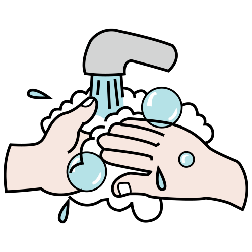
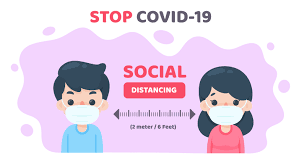
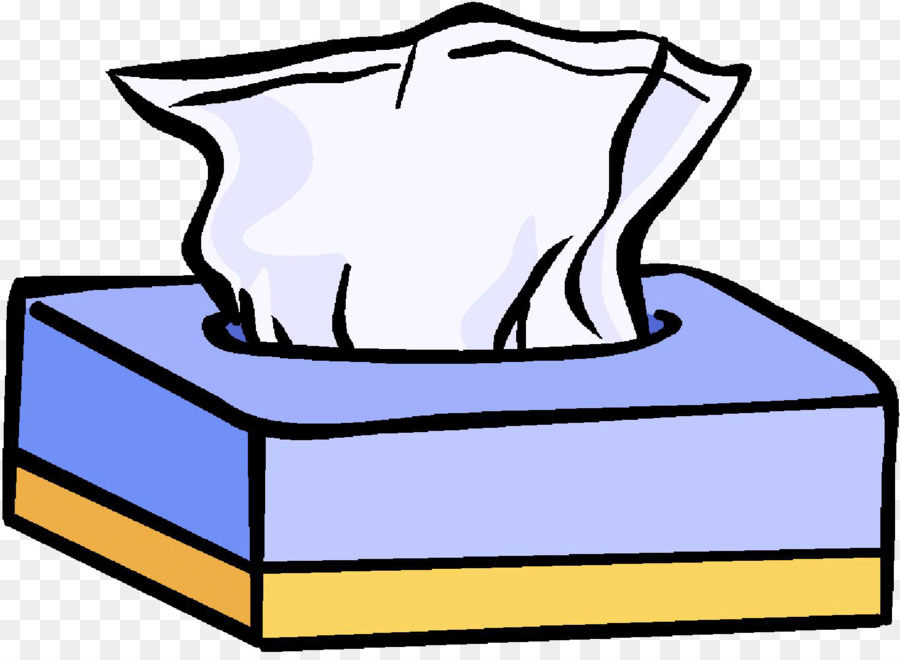
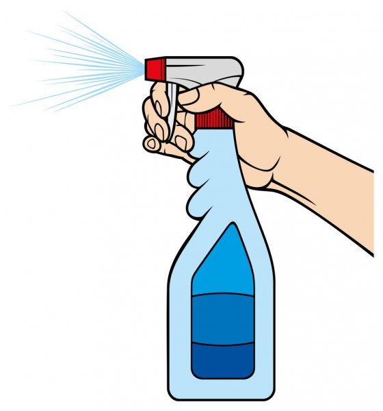
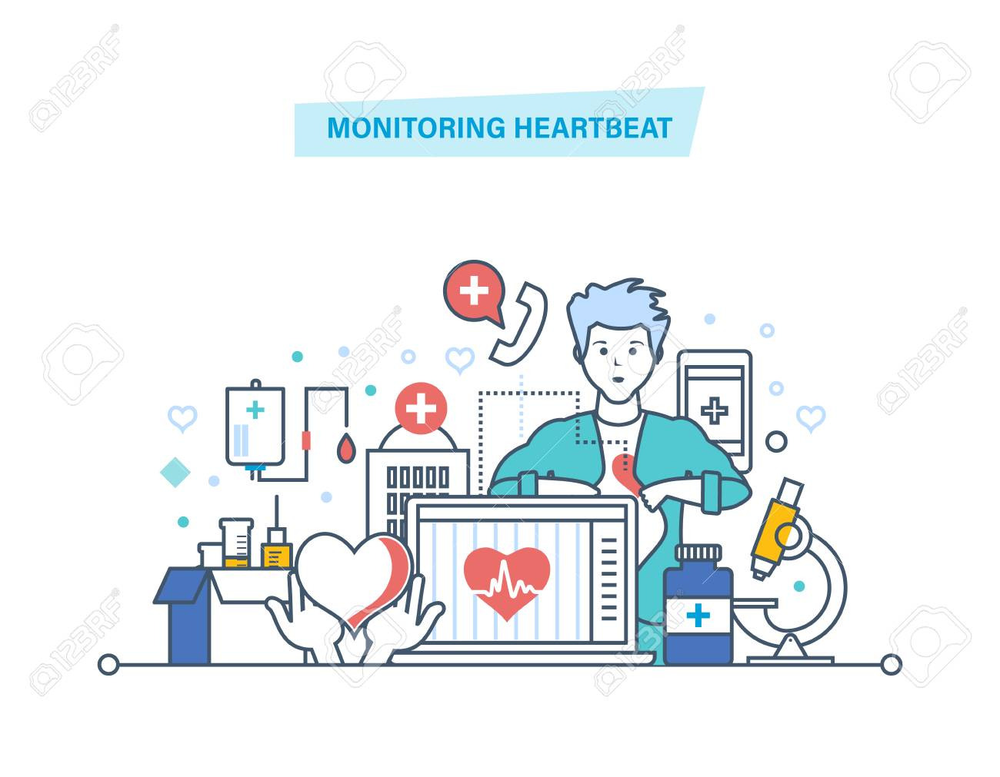

- Entre personas que están en contacto cercano(dentro del 1.5 mts).
- A través de las gotitas respiratorias producidas cuando una persona infectada tose, estornuda, respira, canta o habla.
- Las gotitas respiratorias provocan infecciones cuando son inhaladas o se depositan en las membranas mucosas, como las que reviste la parte interna de la nariz y la boca.
Las personas que están infectadas pero no presentan síntomas tambien pueden propagar el virus a otras personas
Otras formas menos comunes de propagación del COVID-19
- En ciertas circunstancias(por ejemplo, cuando las personas estan en espacios cerrados con poca ventilacion), el COVID-19 puede propagarse mediante la transmision por aire
- El COVID-19 se propaga con menor frecuencia a traves del contacto con superficies contaminadas
Todas las personas deberian...
Lavarse las manos frecuentemente
- Lavese las manos con frecuencia con agua y jabon por al menos 20 segundos, especialmente despues de haber estando en un lugar publico, o despues de sonarse la nariz, toser o estornudar.
- Es de suma importancia que se lave:
- Antes de comer o preparar la comida
- antes de tocarse la cara
- Despues de ir al baño
- Despues de salir de lugares publicos
- Despues de sonarse la nariz, toser o estornudar
- Despues de manipular su mascarilla
- Despues de cuidar a una persona enferma
- Despues de tocar animales o mascotas
- Si no dispone de agua y jabon, use desinfectante de manos que contenga al menos un 60% de alcohol.
- Evite tocarse los ojos, nariz y boca si haberse lavado las manos
Evite el contacto directo
- Dentro de su casa: evite tener contacto con personas que estan enfermas
- De ser posible, mantenga una distancia de 1.5mts entre persona enferma y otros miembros de su hogar
- Fuera de su casa: mantenga una distancia de 1.5 mts de las personas que no viven en su casa
- Recuerde que algunas personas que no tienen sintomas pueden propagar el virus
- Mantenga una distancia de al menos 1.5 mts(aproximadamente la longitud de dos brazos) de otras personas
- Mantener distancia con los demas es especialmente importante para las personas que tienen mayor riesgo de enfermarse gravemente
Cubrase la boca y la nariz con una mascarilla cuado esta con otras personas

- Podria transmitir el COVID-19 a otras personas incluso si no se siente mal
- El objetivo de la mascarilla es proteger a otras personas, en caso de estar infectado
- Todos deben usar mascarilla en lugares publicos y cuando estan con otras personas que no viven en su hogar, especialmente cuando es dificil mantgener otras medidas de distanciamiento social
- Los niños menores de 2 años, asi como las personas con dificultad para respirar o que estan inconcientes, incapacitadas o que por algun otro motivo no pueden quitarse la mascarilla sin ayuda, no deben usar mascarilla
- NO use una mascarilla destinanda a trabajadores de atencion medica.
- Siga manteniendo una distancia de aproximadamente 1.5 mts de las demas personas. El uso de la mascarilla no reemplaza el distanciamiento social
Cubrase la nariz y la boca al toser y estornudar
- Cubrase siempre la nariz y boca con un pañuelo desechable al toser o estornudar o cubrase con la marte interna del codo y no escupa
- Bote los pañuelos desechables usados a la basura
- Lávese las manos inmediatamente con agua y jabón por al menos 20 segundos. Si no dispone de agua y jabón, límpiese las manos con un desinfectante de manos que contenga al menos un 60 % de alcohol
Limpie y desinfecte
- Limpie Y desinfecte diariamente las superficies que se tocan con frecuencia . Esto incluye las mesas, las manijas de las puertas, los interruptores de luz, los mesones, las barandas, los escritorios, los teléfonos, los teclados, los inodoros, los grifos, los lavamanos y los lavaplatos
- Si las superficies están sucias, límpielas. Lávelas con agua y detergente o jabón antes de desinfectarlas
- Luego, use un desinfectante de uso doméstico. La mayoría de los desinfectantes comunes para el hogar registrados en la EPAícono de sitio externo funcionarán
Monitoree su salud a diario
- Esté atento a los síntomas. Esté atento a la aparición de fiebre, tos, dificultad para respirar u otros síntomas del COVID-19.
- Es sumamente importante si debe hacer mandados esenciales, ir a la oficina o lugar de trabajo, y en entornos donde podría ser difícil mantener la distancia física de 6 pies.
- Controle su temperatura si presenta síntomas
- No controle su temperatura dentro de los 30 minutos posteriores a ejercitarse o después de tomar medicamentos que podrían reducir su temperatura, como el acetaminofeno
- Siga la guía de los CDC si presenta síntomas
- Proteja su salud esta temporada de influenza
Existe la probabilidad de que ambos tipos de virus, tanto los de la influenza como el virus que causa el COVID-19, se propaguen durante este otoño e invierno. Los sistemas de atención médica podrían verse sobrepasados si deben tratar pacientes tanto con influenza como con COVID-19. Esto significa que vacunarse contra la influenza en la temporada 2020-2021 es más importante que nunca.
Si bien vacunarse contra la influenza no lo protege del COVID-19, tiene muchos beneficios importantes:
- Se ha demostrado que las vacunas contra la influenza reducen el riesgo de influenza, hospitalización y muerte a causa de esta enfermedad
- Además, vacunarse contra la influenza permite preservar los recursos de atención médica para que puedan atender a los pacientes con COVID-19